An end-to-end machine learning pipeline that predicts telecom customer churn using 5 supervised classifiers and segments customers into actionable groups with 3 unsupervised clustering algorithms.
Project Overview
This project applies a complete end-to-end machine learning pipeline to the IBM Telco Customer Churn dataset — 7,043 customer records with 21 features covering demographics, subscribed services, contract details, and billing information.
The supervised learning component trains and benchmarks five classifiers to predict which customers are likely to cancel their service. The best model — Random Forest — achieves 80.26% accuracy and is recommended for production deployment as a live monthly churn-scoring engine integrated into the company's CRM.
The unsupervised clustering component discovers three natural customer segments: high-risk newcomers, loyal long-term customers, and a mid-tier transitional group. These segments enable targeted, differentiated retention campaigns rather than one-size-fits-all marketing.
Supervised Learning
All models trained on 80/20 stratified split (random_state=42) and evaluated on 1,409 held-out test samples.
Unsupervised Learning
Three clustering algorithms applied to discover natural customer groups without using the churn label.
The Elbow Method on K=1..10 identified 3 as the optimal number of clusters. Produces the most interpretable and actionable customer segments. Clusters visualized in 2D using PCA dimensionality reduction.
Ward linkage minimizes within-cluster variance. A dendrogram was plotted on a 300-sample subset to confirm the cut point at 3 clusters. Results broadly corroborate K-Means, validating the 3-group customer structure.
Density-based algorithm that auto-determines cluster count and flags outliers as noise (label = -1). Useful for identifying atypical customers who don't fit any standard segment and may require individual case-by-case review.
Visualizations
All 19 plots generated and saved at 150 DPI. Click any image to enlarge.
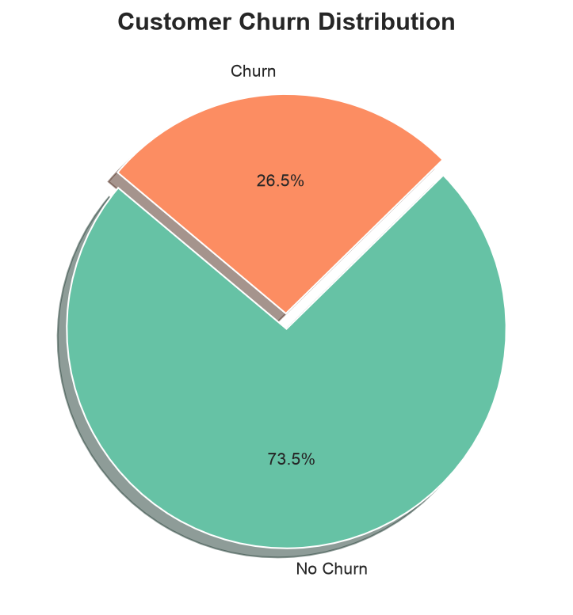
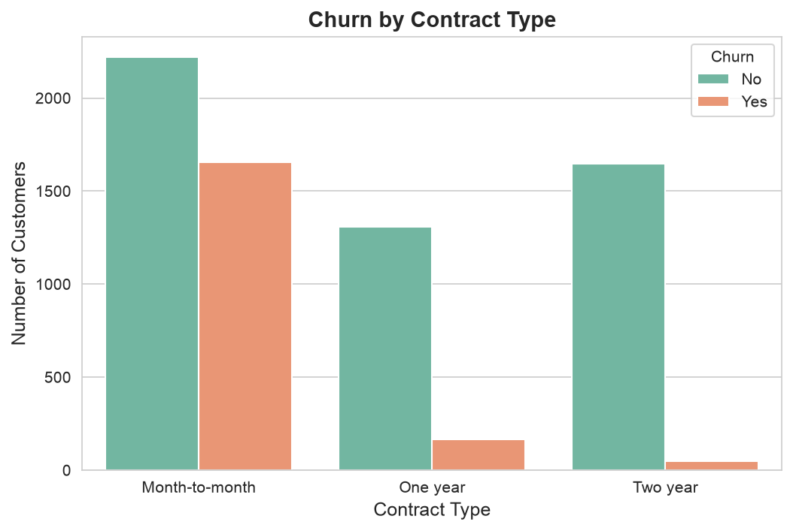
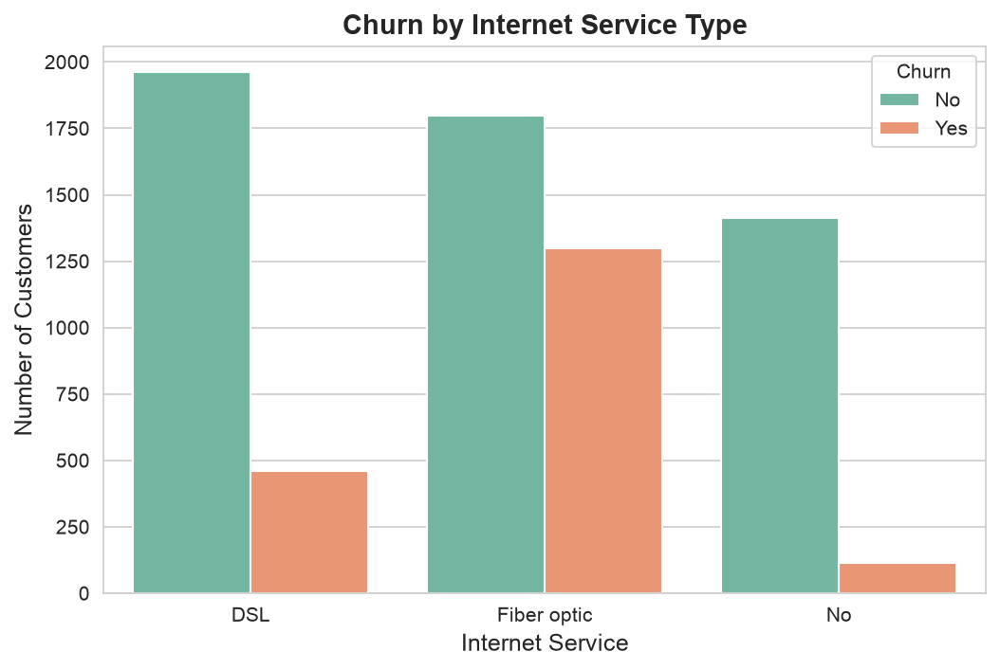
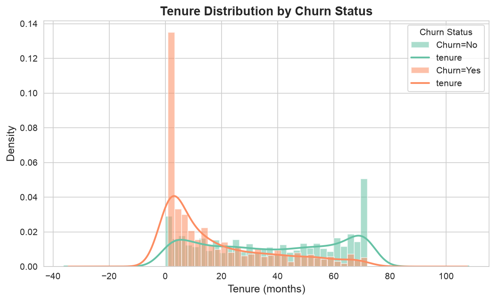
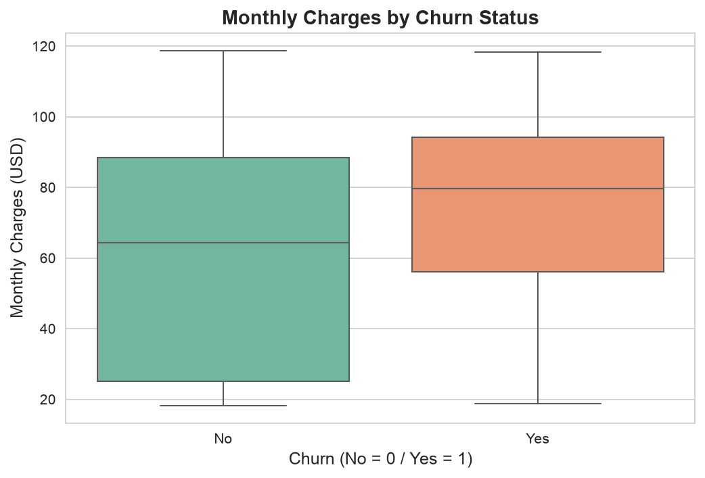
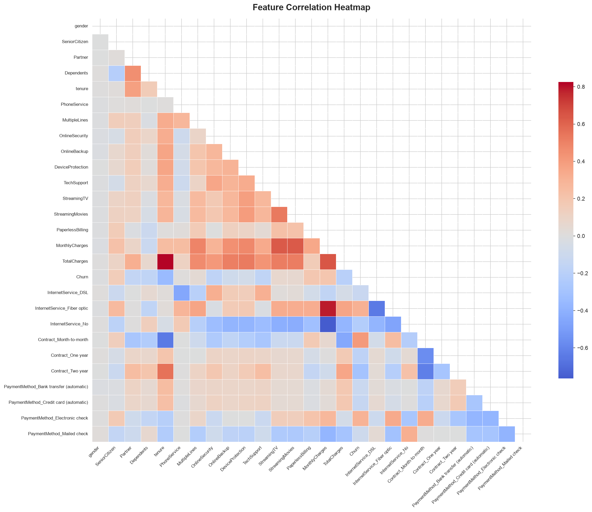
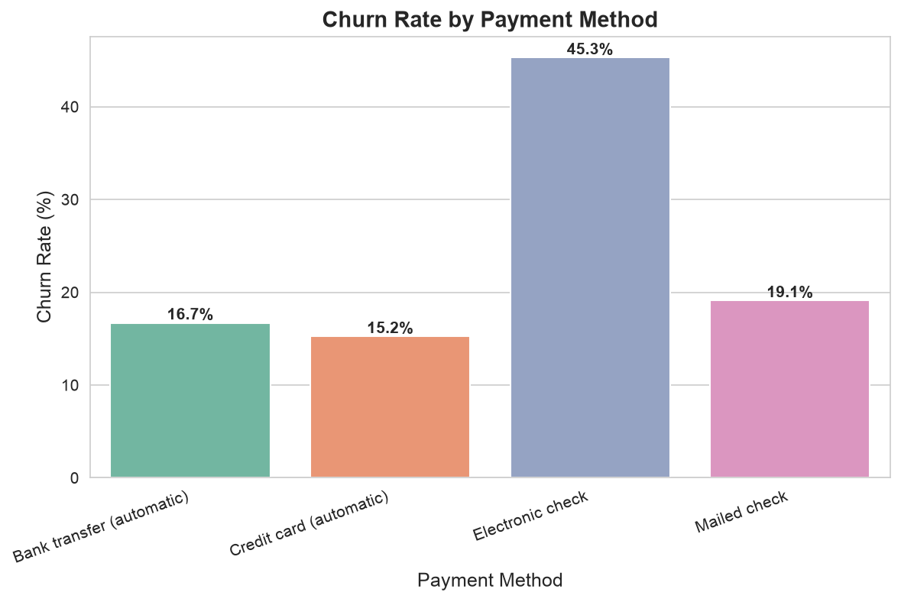
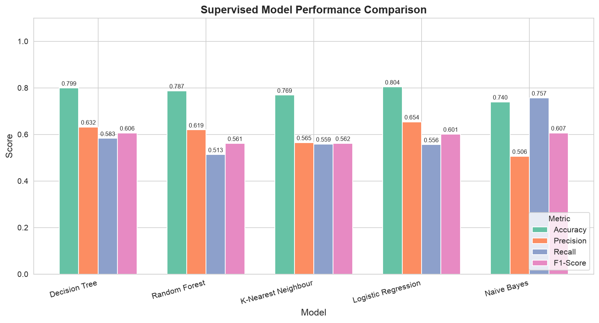
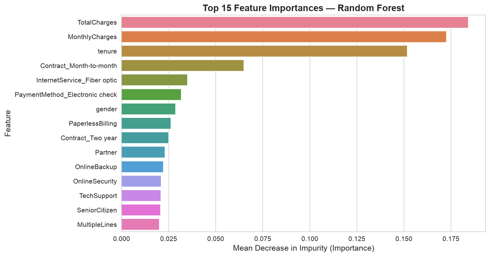
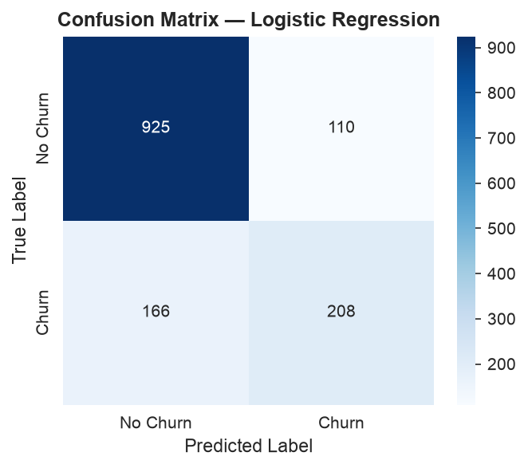
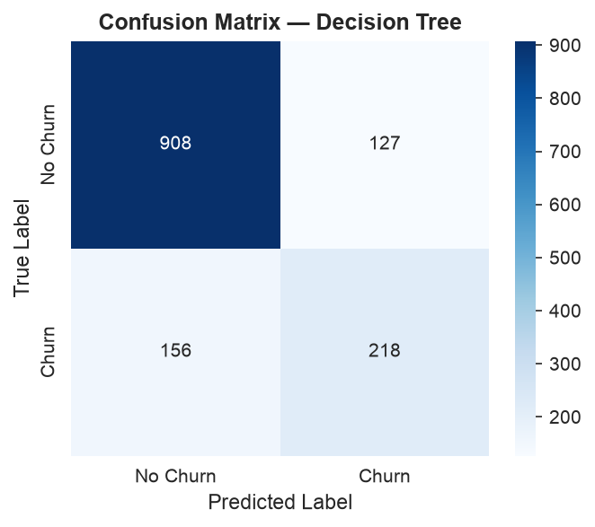
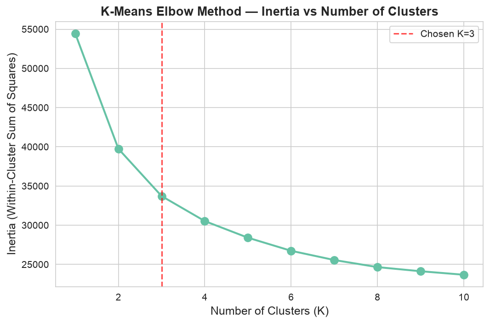
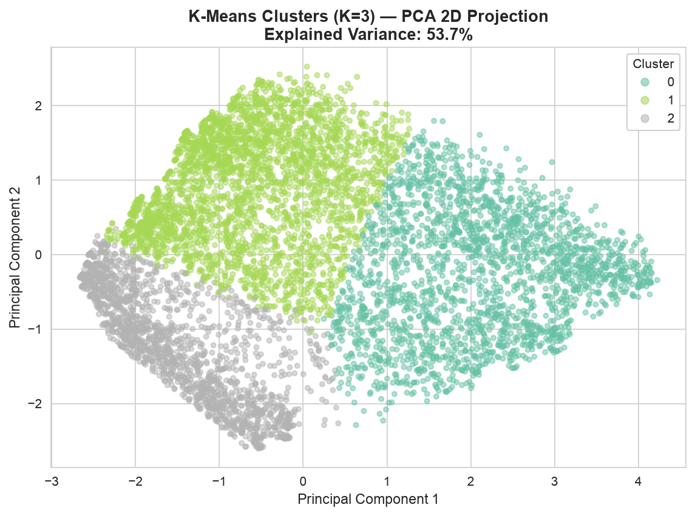
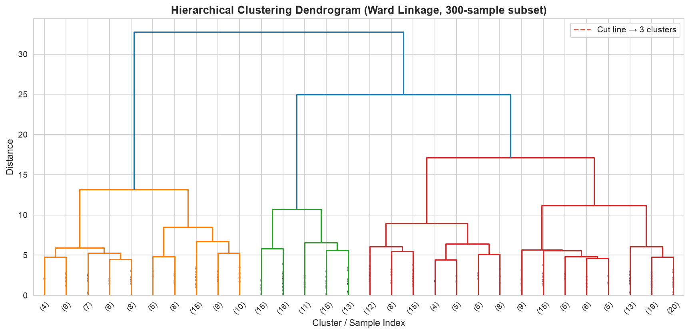
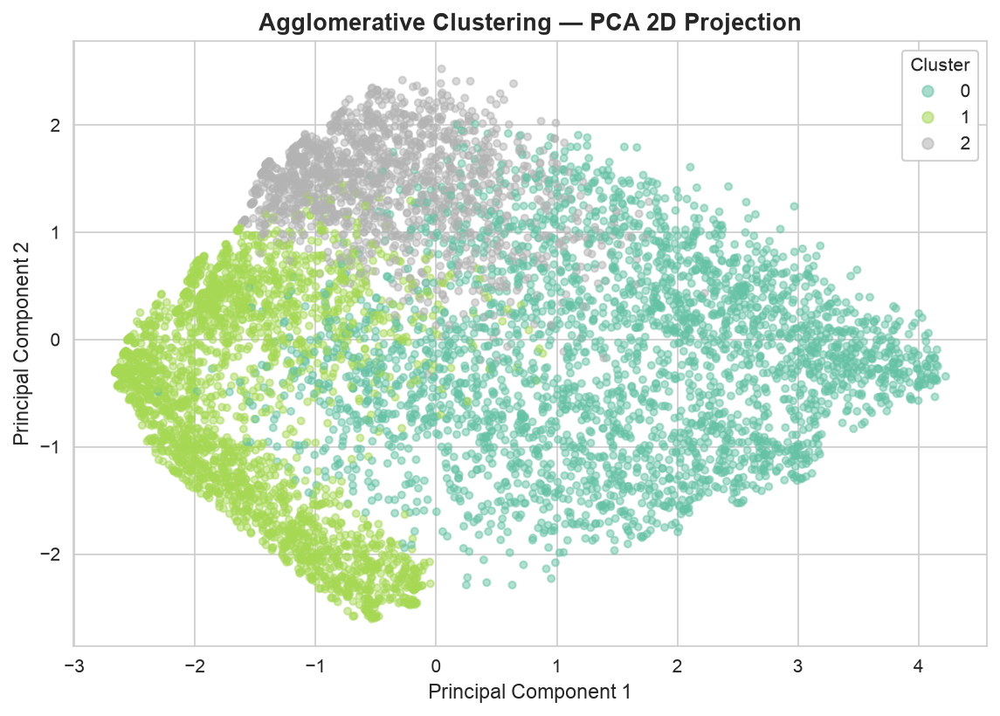
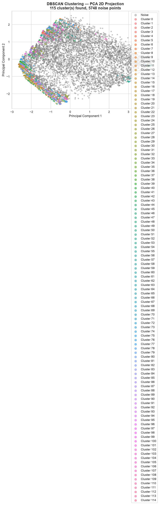
Business Insights
Data-driven insights translated into actionable strategies for the telecom company.